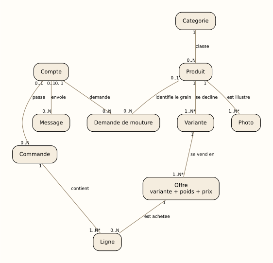
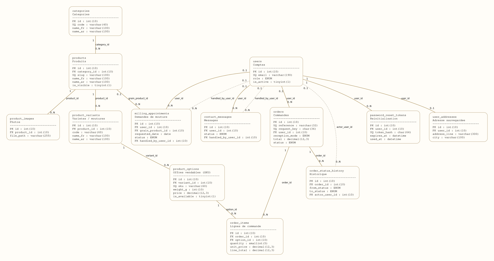
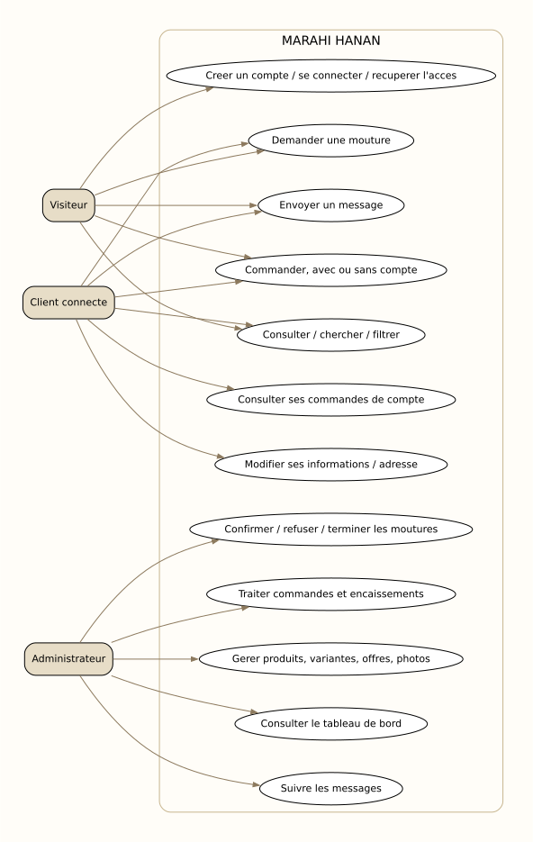
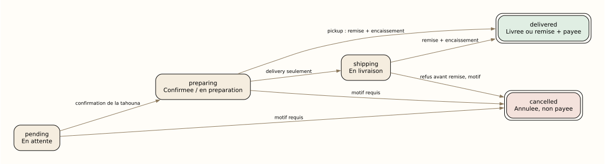
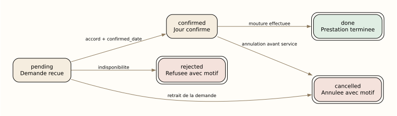
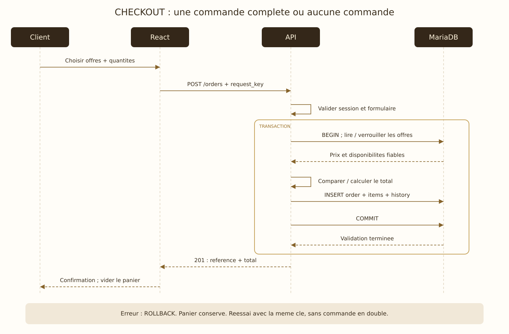

الهدف هو نقل واجهة مراحي حنان من تخزين محلي تجريبي إلى نظام بسيط بقاعدة بيانات مشتركة: كاتالوغ بلغتين، طلبات مع أو بدون حساب، ومتابعة الرحية والرسائل من الإدارة. هذا تحليل وتصميم للمرحلة القادمة؛ الواجهة الحالية ما زالت تستعمل localStorage، ولم يقع ربطها بهذه القاعدة.
القرار
الاختيار المقترح ولماذا
المحرك
MariaDB/MySQL ضمن LAMPP. اختُبر SQL فعليًا على MariaDB 10.4.32 الموجودة محليًا؛ التوافق مع MySQL 8.0.16+ مقصود في الصياغة لكنه غير مختبر هنا. [S5]
الحجم
13 جدولًا، 132 حقلًا، 16 مفتاحًا أجنبيًا. لا خدمات مصغّرة ولا نظام صلاحيات معقد.
الترجمة
حقول عربية وفرنسية داخل نفس السجل، لأن المشروع يدعم لغتين محددتين.
طلب الرحية ليس شراء حبوب؛ الكمية تخص الحبوب التي أحضرها الحريف.
جدول مستقل؛ لا OrderItem ولا حساب سعر طحن مفترض.
BR15
موعد اليوم أو المستقبل عند الإنشاء؛ التأكيد لا يتم تلقائيًا.
الخادم يفسّر DATE في Africa/Tunis؛ SQL لا يستعمل CHECK متغيرًا مع تاريخ اليوم.
BR16
الاسم أو رقم الهاتف أو البريد نفسه لا يثبت ملكية طلبيات قديمة كزائر.
سياسة تفويض الخادم؛ لا ربط آلي بالبريد بعد التسجيل.
BR17
لا عداد مخزون في الإصدار الأول؛ التوفّر يدوي والطلب يحتاج تأكيد الطاحونة.
قرار نطاق واضح؛ لا ندّعي منع بيع آخر قطعة مرتين.
BR18
بعد بيع عبوة، لا نغيّر هويتها: النوع والوزن وSKU. نعدل السعر/التوفر، أو ننشئ عبوة جديدة ونوقف القديمة.
الخادم يفحص وجود order_items قبل تعديل الهوية؛ لا توجد trigger لهذا المنع.
4. MCD: النموذج المفاهيمي
الرسم يبين مفاهيم النشاط قبل تفاصيل SQL. المنتوج شيء مثل «زرير»، النوع مثل «فستق»، والعرض/العبوة هو «فستق 300غ بسعر 15.000». سطر الطلب يحتفظ بما تم الاتفاق عليه وقت الطلب.

MCD مبسّط. الرمز 1..N* يعني حدًا أدنى مطلوبًا عند النشر أو إنهاء إنشاء الطلب، ويفرضه الخادم داخل المعاملة؛ يمكن أن يظل المنتوج مسودة غير منشورة دون أبناء.
عنوان الحساب ورموز استرجاع كلمة السر وسجل الحالات تفاصيل مساندة تظهر في ERD الفيزيائي. زيارة الموقع والقفة ليستا كيانين مخزنين في هذه النسخة.
5. ERD: جميع الجداول والعلاقات
PK = مفتاح أساسي، FK = مفتاح أجنبي، UQ = قيد تفرد. 0..1 تعني علاقة اختيارية، و0..N تعني صفرًا أو أكثر. الخطوط الرمادية المتقطعة تربط المسؤول الذي عالج السجل، والخطوط الأخرى تربط ملكية البيانات أو بنية الكاتالوغ.

13 جدولًا و16 علاقة مرجعية. افتح SVG أو PDF المنفصل للتكبير؛ الرسوم التفصيلية للكاتالوغ والطلبات والخدمات موجودة في مجلد diagrams.
هذا ERD فيزيائي ملخّص الحقول لتسهيل القراءة. كل الحقول موجودة في قاموس البيانات، وفي erd-complete.mmd وملف schema-model.json.
6. MLD وMPD: من المفاهيم إلى الجداول
في النموذج المنطقي تصبح العلاقة 1:N مفتاحًا أجنبيًا عند الجهة N. علاقة «شراء عرض في طلب» تُحل بجدول order_items الذي يضيف كمية وسعرًا ونسخًا من الأسماء. العلاقة الحساب ← العنوان هي 1 إلى 0..1 لأن user_id فريد في user_addresses.
النسخة الكاملة من MLD، بكل أسماء الحقول وتمييز PK/FK، موجودة في MLD.txt. أما MPD فهو 01-schema.sql: أنواع MariaDB، القيود، المحرك InnoDB، الترقيم التلقائي والفهارس.
لماذا هذا الفصل؟
لا نخزن قائمة أنواع أو أوزان كنص بفواصل داخل products؛ كل قيمة قابلة للاختيار لها سجل واضح.
لا نكرر product_id في order_items؛ يمكن الوصول إليه من option → variant → product.
لا نكرر اسم الفئة داخل كل منتوج؛ توجد فئة مرجعية مستقلة.
نكرر معلومات البيع القديمة عمدًا في snapshots، حتى يبقى التاريخ ثابتًا. هذا تكرار مقصود وليس نسيانًا للتطبيع.
لكل جدول PK رقمي، بينما slug وsku وreference مفاتيح أعمال فريدة لها استخدام مختلف.
7. قاموس البيانات الكامل
المرجع الآتي مولّد من القاعدة التي نجح إنشاؤها فعليًا، وليس قائمة منفصلة قد تختلف عن SQL. جميع حقول DATETIME تُكتب وتُقرأ على اتصال مضبوط على UTC. NULL تعني قيمة غير موجودة، وليست سلسلة فارغة.
users
حسابات الحرفاء والمسؤول. كلمات السر لا تُسترجع كنص، وإنما تتحقق منها مكتبة الباك إند مع password_hash. role يأتي من الخادم وليس من استمارة التسجيل.
الحقل
النوع
NULL
الافتراضي
المعنى
id PK
int(10) unsigned
لا
—
معرّف المستخدم الداخلي؛ يزيد تلقائيًا
full_name
varchar(100)
لا
—
الاسم الكامل
email UQ
varchar(190)
لا
—
بريد الدخول؛ يطبّعه الخادم إلى lowercase
phone
varchar(16)
لا
—
الهاتف بصيغة +216 ثم ثمانية أرقام
password_hash
varchar(255)
لا
—
هاش كلمة السر؛ لا تحفظ كلمة السر الأصلية
role
enum('customer','admin')
لا
'customer'
دور واحد بسيط لكل مستخدم
is_active
tinyint(1)
لا
1
تفعيل الحساب أو تعطيله
preferred_language
enum('fr','ar')
لا
'fr'
لغة المراسلات الخاصة بالحساب
created_at
datetime
لا
current_timestamp()
وقت الإنشاء UTC
updated_at
datetime
لا
current_timestamp()
آخر تعديل UTC؛ يتحدث تلقائيًا عند تعديل الصف
user_addresses
عنوان افتراضي محفوظ واحد فقط. تغييره يسهّل الطلب القادم ولا يعدّل الطلبات القديمة. لا يحتاج الطلب إلى FK لهذا العنوان؛ يأخذ نسخة من قيمه.
الحقل
النوع
NULL
الافتراضي
المعنى
id PK
int(10) unsigned
لا
—
معرّف العنوان؛ يزيد تلقائيًا
user_id FK
int(10) unsigned
لا
—
مالك العنوان؛ عنوان محفوظ واحد فقط للحساب
address_line
varchar(300)
لا
—
الشارع ورقم المنزل والتفاصيل
city
varchar(100)
لا
—
المدينة أو المعتمدية
postal_code
char(4)
نعم
NULL
ترقيم بريدي اختياري؛ نص لحفظ الأصفار
updated_at
datetime
لا
current_timestamp()
آخر تعديل UTC؛ يتحدث تلقائيًا عند تعديل الصف
categories
الفئات الثلاث الأساسية: حبوب، منتوجات تقليدية، وفواكه جافة. code ثابت لعمل الفلاتر، والاسم يترجم.
الحقل
النوع
NULL
الافتراضي
المعنى
id PK
int(10) unsigned
لا
—
معرّف الفئة؛ يزيد تلقائيًا
code UQ
varchar(40)
لا
—
رمز ثابت مثل grains أو traditional أو nuts
name_fr
varchar(100)
لا
—
اسم الفئة بالفرنسية
name_ar
varchar(100)
لا
—
اسم الفئة بالعربية
image_path
varchar(255)
نعم
NULL
مسار نسبي لصورة الفئة
sort_order
smallint(5) unsigned
لا
0
ترتيب العرض
is_active
tinyint(1)
لا
1
الفئة مفعلة أم مخفية
products
هوية المنتوج ووصفه وصورته وفئته. لا يوجد سعر هنا لأن السعر يخص عبوة محددة. nut_type مطلوب تطبيقيًا للفئة nuts وNULL لغيرها.
الحقل
النوع
NULL
الافتراضي
المعنى
id PK
int(10) unsigned
لا
—
معرّف المنتوج؛ يزيد تلقائيًا
category_id FK
int(10) unsigned
لا
—
فئة واحدة لكل منتوج
slug UQ
varchar(100)
لا
—
رمز رابط ثابت؛ يقابل id النصي في React حاليا
name_fr
varchar(100)
لا
—
اسم المنتوج بالفرنسية
name_ar
varchar(100)
لا
—
اسم المنتوج بالعربية
description_fr
text
لا
—
وصف المنتوج بالفرنسية
description_ar
text
لا
—
وصف المنتوج بالعربية
nut_type
enum('nuts','dried')
نعم
NULL
فلتر الفواكه الجافة فقط؛ NULL في الأصناف الأخرى
is_visible
tinyint(1)
لا
1
إظهار المنتوج في الكاتالوغ
is_featured
tinyint(1)
لا
0
إظهاره ضمن المنتوجات المفضلة
sort_order
smallint(5) unsigned
لا
0
ترتيب العرض
created_at
datetime
لا
current_timestamp()
وقت الإنشاء UTC
updated_at
datetime
لا
current_timestamp()
آخر تعديل UTC؛ يتحدث تلقائيًا عند تعديل الصف
product_variants
نوع المنتوج أو طريقة رحي الحبوب. مثل تقليدي/فستق، أو حبّ/مرحي رقيق. كل منتوج له نوع واحد على الأقل عند النشر، حتى إن كان اسمه Nature.
الحقل
النوع
NULL
الافتراضي
المعنى
id PK
int(10) unsigned
لا
—
معرّف النوع أو الرحية؛ يزيد تلقائيًا
product_id FK
int(10) unsigned
لا
—
المنتوج المالك للنوع
code
varchar(60)
لا
—
رمز النوع داخل المنتوج؛ مثل pistache
name_fr
varchar(100)
لا
—
اسم النوع بالفرنسية
name_ar
varchar(100)
لا
—
اسم النوع بالعربية
is_active
tinyint(1)
لا
1
السماح باختيار النوع
sort_order
smallint(5) unsigned
لا
0
أول نوع مفعّل هو الاختيار الافتراضي
product_options
العبوة التي تدخل القفة. مثال: نوع فستق، 300غ، 15.000 د.ت. UNIQUE يمنع نفس الوزن مرتين داخل النوع. يمكن إنشاء أوزان مختلفة لكل نوع.
الحقل
النوع
NULL
الافتراضي
المعنى
id PK
int(10) unsigned
لا
—
معرّف العبوة القابلة للبيع؛ ترسله السلة للباك إند؛ يزيد تلقائيًا
variant_id FK
int(10) unsigned
لا
—
نوع واحد لهذه العبوة
sku UQ
varchar(60)
لا
—
رمز فريد للعبوة في الكاتالوغ
weight_g
int(10) unsigned
لا
—
وزن العبوة بالغرام؛ ليس وزن السطر كله
price
decimal(12,3)
لا
—
سعر عبوة واحدة بالدينار التونسي
is_available
tinyint(1)
لا
1
توفر يدوي؛ ليس عدادا للمخزون
sort_order
smallint(5) unsigned
لا
0
ترتيب الأوزان والوزن الافتراضي داخل النوع
updated_at
datetime
لا
current_timestamp()
آخر تعديل للسعر أو التوفر UTC؛ يتحدث تلقائيًا عند تعديل الصف
product_images
صور المنتوج كمسارات ملفات؛ لا نخزن بيانات الصور داخل قاعدة البيانات. الغلاف هو أول صورة حسب sort_order ثم id. صور الأنواع الخاصة تؤجل لمرحلة لاحقة.
الحقل
النوع
NULL
الافتراضي
المعنى
id PK
int(10) unsigned
لا
—
معرّف الصورة؛ يزيد تلقائيًا
product_id FK
int(10) unsigned
لا
—
المنتوج صاحب الصورة
file_path
varchar(255)
لا
—
مسار الملف النسبي؛ الصورة ليست BLOB ولا base64
alt_fr
varchar(150)
لا
''
نص بديل فرنسي
alt_ar
varchar(150)
لا
''
نص بديل عربي
sort_order
smallint(5) unsigned
لا
0
أول صورة حسب الترتيب ثم id هي الغلاف
orders
رأس الطلب: مَن طلب، الاستلام، الإجماليات والحالة. معلومات الحريف والعنوان نسخ وقت الطلب، حتى عند وجود user_id.
الحقل
النوع
NULL
الافتراضي
المعنى
id PK
int(10) unsigned
لا
—
معرّف الطلب الداخلي؛ يزيد تلقائيًا
reference UQ
varchar(32)
لا
—
مرجع ظاهر للحريف؛ ليس وسيلة تفويض للوصول
request_key UQ
char(36)
لا
—
مفتاح محاولة الطلب لمنع تكرار التسجيل عند إعادة الإرسال
رسالة عامة ومتابعتها من المسؤول. تدعم new/read/closed. ليست بديلاً عن طلب رحية؛ النموذج المخصص أدق في نوع الحبوب والكمية واليوم.
الحقل
النوع
NULL
الافتراضي
المعنى
id PK
int(10) unsigned
لا
—
معرّف الرسالة؛ يزيد تلقائيًا
user_id FK
int(10) unsigned
نعم
NULL
حساب المرسل إن وجد
sender_name
varchar(100)
لا
—
اسم المرسل وقت الإرسال
sender_phone
varchar(16)
لا
—
رقم الاتصال
message_text
text
لا
—
مضمون الرسالة؛ حد التطبيق 2000 حرف
status
enum('new','read','closed')
لا
'new'
حالة متابعة الرسالة
handled_by_user_id FK
int(10) unsigned
نعم
NULL
المسؤول المتابع
resolved_at
datetime
نعم
NULL
وقت إغلاق الرسالة UTC
created_at
datetime
لا
current_timestamp()
وقت الإرسال UTC
password_reset_tokens
جدول مساند لمسار نسيان كلمة السر. يخزن هاش رمز عشوائي مؤقت وليس كلمة السر ولا الرابط الخام. الرمز يُستهلك مرة واحدة.
الحقل
النوع
NULL
الافتراضي
المعنى
id PK
int(10) unsigned
لا
—
معرّف طلب الاسترجاع؛ يزيد تلقائيًا
user_id FK
int(10) unsigned
لا
—
صاحب الحساب
token_hash UQ
char(64)
لا
—
SHA-256 لرمز عشوائي قوي؛ ليس هاش كلمة السر
expires_at
datetime
لا
—
وقت انتهاء صلاحية الرمز UTC
used_at
datetime
نعم
NULL
وقت استعماله؛ NULL يعني لم يستعمل
created_at
datetime
لا
current_timestamp()
وقت الإصدار UTC
8. العلاقات، الحذف وسلامة البيانات
الجدول الأب
حقل FK في الابن
أب كل ابن
أبناء كل أب
عند حذف الأب
users
contact_messages.user_id
0..1
0..N
SET NULL
users
contact_messages.handled_by_user_id
0..1
0..N
SET NULL
users
milling_appointments.user_id
0..1
0..N
SET NULL
users
milling_appointments.handled_by_user_id
0..1
0..N
SET NULL
products
milling_appointments.grain_product_id
0..1
0..N
SET NULL
users
orders.user_id
0..1
0..N
SET NULL
product_options
order_items.option_id
1
0..N
RESTRICT
orders
order_items.order_id
1
0..N
RESTRICT
users
order_status_history.actor_user_id
0..1
0..N
SET NULL
orders
order_status_history.order_id
1
0..N
RESTRICT
users
password_reset_tokens.user_id
1
0..N
CASCADE
categories
products.category_id
1
0..N
RESTRICT
products
product_images.product_id
1
0..N
CASCADE
product_variants
product_options.variant_id
1
0..N
CASCADE
products
product_variants.product_id
1
0..N
CASCADE
users
user_addresses.user_id
1
0..1
CASCADE
كيف نقرأ العلاقة؟
كل OrderItem يتبع طلبًا واحدًا وعبوة واحدة. الطلب المؤكد إنشاؤه يجب أن يحتوي 1..N سطور، لكن FK وحده يسمح بوجود رأس طلب بلا سطور أثناء المعاملة.
لكل Order حساب اختياري 0..1. الحساب قد يملك صفرًا أو عدة طلبات.
CASCADE في الكاتالوغ لا تعني السماح بحذف منتوج مباع: RESTRICT عند السطر يمنع حذف العبوة، وبالتالي يفشل حذف السلسلة كاملة إذا استُعملت عبوة منها.
SET NULL عند حذف حساب لا يمحو الطلب أو الموعد؛ تبقى نسخ البيانات وقت الحدث. تعطيل الحساب هو المسار العادي بدل الحذف.
حذف صورة من الجدول لا يحذف ملفها تلقائيًا. الخادم ينظف الملفات ضمن مسار إدارة الصور.
قيود لا يستطيع CHECK وحده ضمانها
أن subtotal يساوي SUM(order_items.line_total)، وأن الطلب غير فارغ.
أن انتقال الحالة مشروع بحسب الحالة السابقة وطريقة الاستلام، وأن له حدث تاريخ مطابقًا.
أن grain_product_id يشير لحبوب، وأن nut_type يخص فئة nuts.
أن تاريخ الموعد ليس في الماضي عند الإرسال، وأن المسؤول وافق على الطاقة اليومية.
أن مستخدم API مسؤول فعلًا أو صاحب الطلب. يلزم تحقق في كل endpoint.
9. السيناريوهات وحالات الاستعمال
لكل سيناريو: طرف وشروط ومسار عادي واستثناء ونتيجة. هذه سيناريوهات النظام بعد ربط الباك إند، وبعضها أوسع من الواجهة التجريبية الحالية كما يوضح قسم الفجوات.
UC01 · تصفح وبحث واختيار لغة
العنصر
التفصيل
الطرف
زائر أو حريف
قبل البدء
لا شروط مسبقة.
المسار العادي
يفتح الفئة، يختار اللغة، يبحث أو يرتب. الخادم يعرض فقط الفئات المفعلة والمنتوجات المرئية والأنواع والعبوات المتوفرة. السعر الافتراضي هو أول نوع فعال ثم أول وزن متوفر حسب ترتيب العرض.
الاستثناءات
نتيجة فارغة تُعرض كرسالة مفهومة. منتوج مخفي لا يظهر عبر البحث ولا عبر رابط مباشر للعموم.
بعد الانتهاء
قراءة فقط؛ لا ننشئ سجل زيارة أو قفة.
UC02 · إضافة وتعديل القفة
العنصر
التفصيل
الطرف
زائر أو حريف
قبل البدء
عرض موجود وقابل للاختيار.
المسار العادي
يختار النوع والوزن والكمية. تحفظ React option_id والكمية ونسخة عرض محلية. إضافة العبوة نفسها تدمج الكمية حتى 99.
الاستثناءات
المنتوج قد يختفي بعد إضافته؛ سيُرفض عند إعادة التسعير. مسح القفة لا يحذف أي طلب قديم.
بعد الانتهاء
لا كتابة في قاعدة البيانات.
UC03 · طلب توصيل كزائر
العنصر
التفصيل
الطرف
زائر
قبل البدء
قفة غير فارغة وبيانات اتصال وعنوان ومدينة صحيحة.
المسار العادي
يرسل القفة ومفتاح المحاولة. الخادم يحدد user_id=NULL، يتحقق من المنطقة والأسعار، ويحسب المجموع. داخل معاملة ينشئ الطلب والسطور وحدث pending. لا تفرغ القفة إلا بعد رد نجاح واضح.
الاستثناءات
سعر تغير: 409 مع عرض السعر الجديد دون إنشاء طلب. عبوة غير متوفرة: 409. عنوان أو هاتف غير صالح: 422. خطأ قاعدة: rollback.
بعد الانتهاء
طلب كامل غير مدفوع بعنوان منسوخ ومرجع واضح.
UC04 · طلب واستلام من المحل
العنصر
التفصيل
الطرف
حريف مسجّل أو زائر
قبل البدء
قفة صحيحة.
المسار العادي
المسجّل يملأ من عنوانه المحفوظ عند الحاجة لكن يختار pickup. الخادم يصفر معلوم التوصيل ويفرغ حقول التوصيل في الطلب. الحساب يحدد من الجلسة.
الاستثناءات
وجود عنوان محفوظ لا يحوّل الطلب لتوصيل تلقائيًا. معلومات body لا تستطيع إسناد الطلب لحساب آخر.
بعد الانتهاء
طلب pending، توصيله صفر، وحقول عنوانه NULL.
UC05 · انقطاع الرد وإعادة إرسال الطلب
العنصر
التفصيل
الطرف
نفس جلسة checkout
قبل البدء
قد يكون الطلب الأول حُفظ لكن الرد لم يصل.
المسار العادي
تحتفظ React بنفس request_key ولا تنشئ مفتاحًا جديدًا لكل نقرة. الخادم يربط المحاولة بالجلسة ويتحقق من تطابق المحتوى. UNIQUE يمنع نسخة ثانية. يرجع نتيجة الطلب نفسه فقط بعد التحقق من سياق المحاولة.
الاستثناءات
نفس المفتاح مع جسم مختلف: 409. لا نعرض بيانات طلب موجود لمجرد معرفة مرجعه أو مفتاحه من جلسة مختلفة.
بعد الانتهاء
طلب واحد، أو استجابة تعارض؛ لا طلبيتان لنفس المحاولة.
UC06 · تسجيل حساب ودخول واسترجاع
العنصر
التفصيل
الطرف
زائر
قبل البدء
بريد اختبار أو بريد حقيقي عند تشغيل الخدمة الفعلية.
المسار العادي
التسجيل يطبع البريد والهاتف ويولد هاش كلمة السر ويجعل role=customer. الدخول يتحقق من الهاش ومن تفعيل الحساب وينشئ جلسة خادم. الاسترجاع يصدر رمزًا مؤقتًا ويرسل رابطًا بعد ربط البريد.
الاستثناءات
بريد مسجل: رفض التسجيل. بيانات دخول غير صحيحة: رسالة عامة. رمز مستعمل أو منتهٍ: رفض. لا يوجد حساب seed نشط أو كلمة سر افتراضية.
بعد الانتهاء
حساب وجلسة صحيحة أو رسالة فشل عامة؛ لا كلمة سر خام في DB.
تعديل البريد أو الهاتف لا يسند طلبيات زائر قديمة إليه. التسجيل لا يحوّل كل طلبيات الجهاز إلى حسابه.
بعد الانتهاء
تتغير البيانات القادمة فقط، وتبقى snapshots القديمة ثابتة.
UC08 · إضافة منتوج أو تعديل سعر
العنصر
التفصيل
الطرف
مسؤول
قبل البدء
جلسة admin فعالة.
المسار العادي
يحفظ اسمين ووصفين وفئة، ثم أنواعًا وعبوات وأسعارًا وصورة. يمكن إبقاء المنتوج مخفيًا حتى تكتمل البيانات. السعر يغيّر option.price فقط. هوية العبوة المباعة لا تتغير؛ تغيير وزنها أو نوعها يحتاج عبوة جديدة.
الاستثناءات
وزن مكرر داخل النوع أو SKU مكرر: رفض. نوع من دون ترجمة أو نشر بدون عبوة وصورة: رفض تطبيقي.
بعد الانتهاء
كاتالوغ محدث؛ لا تعديل على سطور الطلبات السابقة.
UC09 · إيقاف بيع منتوج
العنصر
التفصيل
الطرف
مسؤول
قبل البدء
منتوج موجود.
المسار العادي
يغيّر is_visible أو يعطّل نوعًا أو عبوة. الزائر لا يستطيع طلبه، حتى لو احتفظ به محليًا في قفته.
الاستثناءات
الحذف المادي لعبوة مباعة مرفوض. يمكن حذف مسودة غير مستعملة بعد التحقق من الروابط والملفات.
بعد الانتهاء
التاريخ محفوظ والبيع الجديد متوقف.
UC10 · معالجة طلب وتسليم وخلاص
العنصر
التفصيل
الطرف
مسؤول
قبل البدء
طلب pending أو حالة غير نهائية.
المسار العادي
يقفل صف الطلب، يتأكد من الحالة الحالية ومن الانتقال المسموح، ويحدث الحالة والتاريخ في معاملة واحدة. عند التسليم فقط يحدّث payment_status=paid وpaid_at.
الاستثناءات
مسؤول ثان غيّر الحالة قبل الحفظ: 409. pickup لا يمر عبر shipping. delivered لا يعود cancelled ضمن هذا النطاق.
بعد الانتهاء
حالة حالية وسجل أحداث متوافقان، وخلاص فعلي عند التسليم.
UC11 · إلغاء طلب قبل التسليم
العنصر
التفصيل
الطرف
مسؤول؛ الحريف يطلب الإلغاء بالاتصال
قبل البدء
الطلب ليس delivered ولا cancelled.
المسار العادي
يتحقق المسؤول من عدم التسليم ويذكر السبب. الخادم يقفل الطلب، ينقله إلى cancelled ويكتب السبب بالتاريخ. يبقى unpaid.
الاستثناءات
طلب في الطريق يمكن إلغاؤه بعد رفض الاستلام فقط وقبل التسليم الفعلي. إرجاع بعد الخلاص يحتاج مسار مرتجعات منفصل غير مشمول.
بعد الانتهاء
السطور والمبالغ لا تمحى؛ لا تُحتسب ضمن المبالغ المحصلة.
UC12 · طلب رحية ثم تأكيدها أو رفضها
العنصر
التفصيل
الطرف
زائر/حريف ثم مسؤول
قبل البدء
اسم وهاتف وحبوب وكمية ويوم مطلوب.
المسار العادي
يسجل طلبًا pending. grain_name نسخة واضحة، ورابط منتوج الحبوب اختياري. المسؤول يتأكد من القدرة ثم confirmed مع confirmed_date، أو rejected مع سبب. بعد الخدمة يضع done وcompleted_at.
الاستثناءات
تاريخ ماضٍ أو كمية غير موجبة: رفض. لا يوجد حجز ساعات تلقائي ولا وعد بعدد مواعيد غير محدود. الإلغاء قبل الخدمة يحتاج سببًا.
بعد الانتهاء
طلب خدمة مستقل، لا يبيع حبوبًا ولا يخصم مخزون كاتالوغ.
UC13 · رسالة اتصال ومتابعتها
العنصر
التفصيل
الطرف
زائر/حريف ثم مسؤول
قبل البدء
نص غير فارغ حتى 2000 حرف وهاتف صحيح.
المسار العادي
يحفظ new، ثم المسؤول يقرأها فتكون read، وبعد التعامل يغلقها closed مع resolved_at. الرد الهاتفي أو الخارجي لا يرسل تلقائيًا من DB.
الاستثناءات
نص فراغات أو أطول من الحد: رفض. تكرار الرسائل يحده الخادم بمعدل إرسال مناسب.
بعد الانتهاء
رسالة قابلة للمتابعة؛ لا تُحول تلقائيًا إلى موعد أو طلب.
UC14 · محاولات وصول أو تلاعب
العنصر
التفصيل
الطرف
أي مستخدم غير مخوّل
قبل البدء
الطلب يصل إلى API.
المسار العادي
الخادم يفحص الجلسة والدور والملكية، ويتجاهل الأسعار والأدوار المفروضة من body. يعيد 401 أو 403/404 بحسب سياسة الإخفاء.
الاستثناءات
تغيير id في URL، إرسال user_id آخر، سعر سالب، أو طلب منتوج مخفي لا يمر. واجهة React وحدها لا تكفي للحماية.
بعد الانتهاء
لا كشف بيانات ولا كتابة غير مخوّلة.
10. مخطط حالات الاستعمال Use Case

الأطراف الرئيسية ووظائفها. الحريف المسجّل يملك وظائف الزائر إضافة إلى معلوماته وطلباته. إدارة الحسابات الموسّعة والأدوار المتعددة خارج النطاق.
11. آلة حالات الطلب والخلاص

pending → preparing بعد تأكيد الطاحونة. delivery تمر عبر shipping؛ pickup تنتقل من preparing إلى delivered وقت التسليم والخلاص.
الانتقال
الشروط
pending → preparing
تأكيد فعلي من المسؤول.
preparing → shipping
التوصيل فقط.
shipping → delivered
التسليم وتحصيل المبلغ في المعاملة نفسها.
preparing → delivered
الاستلام من المحل والخلاص، بلا مرحلة shipping.
pending/preparing/shipping → cancelled
قبل التسليم، مع سبب؛ لا خلاص مسجّل.
delivered أو cancelled
حالتان نهائيتان في النسخة البسيطة.
12. آلة حالات الرحية والرسائل

تأكيد موعد النهار يدوي، وليس حجز ساعة آليًا.
قواعد الرحية: confirmed وdone يحتاجان confirmed_date. rejected وcancelled يحتاجان سببًا. done وحدها تحمل completed_at. يمكن عند تأكيد نفس اليوم نسخ requested_date إلى confirmed_date، لكن ذلك قرار مسؤول وليس افتراضًا عند الإرسال.
متابعة الرسالة
new → read → closed. الإغلاق يملأ resolved_at. إذا احتجنا فتح رسالة مغلقة من جديد يمكن اعتماد closed → read ومسح resolved_at في تحديث واحد؛ هذا مسار إداري اختياري، لا يؤثر على الطلبات.
لا نسجل سعر خدمة طحن مفترضًا: لا توجد تسعيرة مصادق عليها في الواجهة. إذا طلب المحل إدارة الخلاص عن الرحية، نضيف حقول التسعير والخلاص أو طلب خدمة منفصلًا بعد الاتفاق.
13. Sequence: تسجيل الطلب من React إلى القاعدة

React ترسل الخيارات والكمية. API تتحقق وتحسب وتكتب. MariaDB تحفظ العلاقات والقيود.
14. المعاملة الذرّية ومسار checkout
خطوات الباك إند بلغة بسيطة
1. Validate session/guest flow + form + request_key.
2. Merge duplicate option_id values; require 1 <= quantity <= 99.
3. BEGIN.
4. Read catalogue rows in a stable order with FOR UPDATE.
5. Reject inactive category/product/variant or unavailable option.
6. Compare observed prices if supplied; on change return 409 after ROLLBACK.
7. Calculate each line, subtotal, delivery_fee and total on the server.
8. INSERT orders with session user_id or NULL.
9. INSERT order_items snapshots; require at least one line.
10. INSERT initial order_status_history (NULL -> pending).
11. COMMIT; return reference + trusted totals.
12. React clears the cart only after success.
عند فقد الرد، قد يكون COMMIT نجح. لذلك لا نفترض فشل الطلب ولا نولّد مفتاح محاولة جديدًا فورًا؛ نعيد نفس المحاولة بطريقة متحققة. UNIQUE على request_key يمنع الازدواج، والخادم يتحقق من الجلسة وتطابق جسم المحاولة قبل إعادة نتيجة طلب موجود.
دقة المبالغ
السعر في SQL من نوع DECIMAL(12,3). لا يُحوّل الحساب في الباك إند إلى أرقام float عشوائية؛ استعمل حسابًا عشريًا مناسبًا أو ملّيمات صحيحة. أرسل مبالغ JSON كسلاسل عشرية مثل "12.500"، واعرضها حسب اللغة. 12.500 ليست 12500 دينارًا.
قراءة الأسعار داخل المعاملة تعطي نسخة متسقة. قفل صفوف الطلب عند تغيير حالته يمنع تأكيدين متزامنين. لا يوجد مخزون كمي محجوز، فلا تعني أقفال الأسعار ضمان توفر آخر قطعة.
15. عقد API والصلاحيات المقترح
البيانات
الزائر
الحريف
المسؤول
الكاتالوغ
R منشور فقط
R منشور فقط
C / R / U؛ D للمسودات غير المستعملة
الحساب والعنوان
C حساب customer
R / U حسابه وعنوانه فقط
R محدود للحاجة؛ لا إنشاء admin عبر التسجيل العام
الطلب وسطوره
C في checkout
C + R طلباته فقط
R + U انتقالات الحالة؛ لا D للطلب المحفوظ
تاريخ الحالات
لا قراءة عامة
R ضمن طلبه
C بواسطة خدمة الحالة + R؛ لا U أو D من الواجهة
طلب الرحية
C
C؛ عرضه لاحقًا يتطلب مسار ملكية إن أضفناه
R / U بحسب الحالات، بلا حذف التاريخ
الرسالة
C
C
R / U متابعة
رمز الاسترجاع
طلب رابط فقط
استعمال رمز صالح مرة
لا عرض للرمز الخام أو هاشه في الإدارة
العقد مستقل عن لغة الباك إند. يمكن تنفيذه لاحقًا بأي تقنية مناسبة دون تغيير النموذج العلاقي. لا ترسل React استعلامات SQL مباشرة، ولا تتصل بقاعدة البيانات من المتصفح.
المسار
الصلاحية
المحتوى أو القاعدة
GET /categories
عام
فئات مفعلة وترجمتها.
GET /products?category=&q=&sort=&page=
عام
كاتالوغ منشور فقط، مرتب ومقسم صفحات.
GET /products/:slug
عام
أنواع وعبوات وصور متاحة للمنتوج.
POST /auth/register
زائر
name,email,phone,password؛ role يثبت customer بالخادم.
لا يمر user_id ولا role ولا total كمصدر ثقة. observed_unit_price للمقارنة فقط، وليس سعر البيع الذي نعتمده. نموذج الإرجاع: 201 مع reference وsubtotal وdelivery_fee وtotal، أو 409 عند تغير السعر/التوفّر، و422 للحقول غير الصالحة، و401/403 للصلاحيات.
لا يوجد GET /orders/:reference عام يكشف تفاصيل الطلب. مرجع الطلب ليس كلمة سر. الزائر يرى نتيجة الطلب أثناء جلسة إنشائه، والمتابعة اللاحقة تكون بالاتصال ما لم نضف رمز متابعة آمنًا في مرحلة مستقلة.
أوقف افتراض كل نوع × كل وزن. اقرأ العبوات الفعلية وسعرها.
السعر الأساسي على المنتوج
أول عبوة متاحة حسب ترتيب العرض
لا تكرر حقل price في products.
image / customImage base64
product_images.file_path
ارفع ملفات فعلية؛ لا تنقل base64 الخاص بالتجربة إلى DB.
cart.key المبني من الاسم والوزن
option_id ثابت
إعادة تسمية النوع لا تكسر هوية العبوة.
profile / user محلي
users + user_addresses + جلسة خادم
لا تأخذ دور المسؤول من localStorage.
orders المحلية
orders + order_items + history
احفظ بإرسال API ومعاملة ذرّية.
myOrders يعرض طلبات الجهاز
GET /me/orders
تصفية إلزامية بملكية الحساب في الخادم.
status select حرّ
انتقالات حالة مسموحة
إظهار الإجراءات الموافقة للحالة وطريقة الاستلام فقط.
appointments.date
requested_date؛ ثم confirmed_date
إضافة السبب عند الرفض والإلغاء.
contacts بلا حالة
contact_messages.status
إضافة إجراء قراءة/إغلاق للرسالة.
لغة وثيم التصفح
يبقيان محليين
لغة مراسلة الحساب والطلب تحفظ بصورة منفصلة.
ترتيب نقل البيانات الأولية
إنشاء الفئات ثم المنتوجات؛ بعدها الأنواع والعبوات والصور.
الـ seed المرفق ينسخ كاتالوغ React الحالي إلى 12 منتوجًا، 22 نوعًا و53 عبوة. حُسبت أسعار البداية بنفس التناسب الموجود في الواجهة، لكنها تصبح بعد الاستيراد أسعارًا صريحة قابلة للتعديل.
الواجهة الحالية تقبل كمية رحية صحيحة من 1 إلى 1000 كغ؛ النموذج يقبل حتى 3 خانات كسرية. إذا اعتمد المحل الكسور يلزم تعديل min وstep في input. فلتر بادئات الهاتف الحالي أضيق من CHECK المقترح؛ نوحّد التحقق عند الربط.
لا نستورد حسابات محلية باعتبارها حسابات حقيقية؛ لا توجد كلمة سر موثوقة في التخزين الحالي.
عند تشغيل API، نوقف كتابة الطلبات في localStorage بدل إبقاء مصدرين مختلفين للحقيقة. يمكن الاحتفاظ بالقفة محليًا وإعادة تسعيرها دائمًا.
17. الفهارس، التطبيع ومؤشرات الإدارة
الفهارس المهمة ولماذا
الفهرس
الاستعمال
UNIQUE users.email
منع حسابين بنفس بريد الدخول بعد التطبيع. رقم الهاتف ليس فريدًا لأن أفراد العائلة قد يشتركون فيه.
UNIQUE variants(product_id,code)
رمز النوع يخص منتوجًا واحدًا.
UNIQUE options(variant_id,weight_g) + sku
منع تكرار العبوة والحصول على رمز بيع ثابت.
orders(user_id,created_at)
طلبات حساب واحد، الأحدث أولًا.
orders(status,created_at)
طابور الطلبات حسب الحالة والتوقيت.
appointments(status,requested_date)
طلبات المواعيد التي تنتظر التأكيد.
history(order_id,created_at,id)
سرد الأحداث بترتيب ثابت.
images(product_id,sort_order,id)
صورة غلاف محددة دون غموض.
UNIQUE orders.request_key
منع تكرار نفس محاولة إنشاء الطلب.
كل PK مفهرس، وInnoDB ينشئ فهرسًا لازمًا للمفتاح الأجنبي إذا لم يغطّه فهرس مناسب. لا نضيف فهرسًا لكل حقل؛ حجم المشروع صغير، والبحث LIKE يكفي كبداية. عند نمو البيانات نقيس الاستعلامات قبل إضافة full-text أو خدمات بحث.
ما لا نخزنه
لا جداول dashboard_stats أو total_customers؛ نعد السجلات الفعلية.
لا جدول order_total منفصل؛ المجموع في رأس الطلب لأننا نحتاج نسخة البيع مع تحقق من مجموع السطور.
لا جداول roles وpermissions منفصلة لدورين ثابتين.
لا جدول weights مستقل لأن وزن الغرامات قيمة داخل العرض وليس كيانًا له بياناته.
فهم الأرقام المالية
قيمة الطلبات المعلّقة ليست مداخيل محصّلة. مثال seed: الطلب المسلم فقط مجموعه 20.500، منها 13.500 منتوجات و7.000 توصيل. هذا رقم خلاص محصّل وليس ربحًا، ولا يمثل دفتر محاسبة أو فوترة قانونية.
03-queries.sql يحتوي 10 استعلامات للكاتالوغ، حساب الحريف، اللوحة، التحصيل، أكثر العبوات تسليمًا، المواعيد، التاريخ وكشف عدم اتساق المجاميع.
18. الحسابات، الحماية والتعامل مع البيانات
نحافظ على حماية أساسية يفهمها الطالب: صلاحيات في الخادم، تحقق من المدخلات، استعلامات بمعاملات، وجلسة من مكتبة موثوقة. البساطة لا تعني الثقة بواجهة المتصفح.
كلمة السر تُحفظ باستعمال مكتبة هاش مخصصة لكلمات المرور، مثل Argon2id حيث تدعمه التقنية، أو الاختيار الآمن الذي توفره المكتبة. لا plaintext ولا MD5 ولا SHA-256 عادي لكلمات المرور. [S3]
رمز الاسترجاع عشوائي قوي ومؤقت، والجدول يحفظ SHA-256 للرمز فقط. هذه حالة مختلفة عن هاش كلمة السر. الرمز صالح لاستعمال واحد، والرد لطلب الاسترجاع لا يكشف وجود البريد. [S4]
اقتراح للمشروع: صلاحية رابط الاسترجاع 30 دقيقة، قابلة للتعديل. تحقق ذري من used_at IS NULL وexpires_at > الوقت الحالي، ثم غيّر الهاش واستهلك الرموز داخل معاملة. انتهاء المدة وفحص الهوية لا يتحققان من FK وحده.
الجلسات تديرها مكتبة الباك إند؛ لا حاجة لفرض JWT أو جدول sessions الآن. عند اعتماد cookies تستعمل إعدادات الحماية المناسبة وCSRF عند اللزوم.
كل API إداري يتحقق من حساب فعال ودور admin. إنشاء حساب الحريف لا يقبل role من المستخدم.
تفاصيل الطلب تقرأ بشرط ملكية في الخادم. تغيير البريد أو الهاتف لا يثبت ملكية طلبيات الزائر.
الأسماء والملاحظات نصوص؛ لا تعرض HTML خامًا منها. الصور ملفات موثقة النوع والحجم واسمها يولده الخادم، وملفات التنفيذ لا تُرفع كصور.
ننسخ فقط المعلومات اللازمة للطلب، ولا نخزن أرقام بطاقة أو بيانات دفع إلكتروني. لا توجد مفاتيح أو كلمات سر حقيقية في seed.
الوقت واللغة
created_at وupdated_at والتوقيتات الفنية في UTC؛ اضبط كل اتصال DB على +00:00، وأبقِ SQL mode الصارم مفعّلًا أثناء التشغيل مثلما هو في ملف الإنشاء. requested_date وconfirmed_date نهاران محليان للطاحونة في Africa/Tunis، فلا نحولهما إلى يوم UTC آخر. تُطبّع أرقام الهاتف إلى +216 ثم 8 أرقام؛ SQL يتحقق من الشكل والطول فقط، لا من تخصيص الرقم أو امتلاكه.
سياسة الاحتفاظ والحذف أو إخفاء البيانات الشخصية تُحدد مع صاحب المشروع قبل الاستعمال التجاري. لا نفترض أن الاحتفاظ الدائم بأرقام الحرفاء مطلوب لمجرد وجود snapshots.
19. التحقق العملي وطريقة الاستيراد
تم إنشاء قاعدة اختبار معزولة في مجلد عمل مؤقت، باستخدام MariaDB 10.4.32 من LAMPP، مع socket محلي ودون منفذ TCP. لم نستورد شيئًا إلى قواعد LAMPP الحالية ولم نربط الواجهة بها.
ما اختُبر
النتيجة
إنشاء 13 جدولًا و132 حقلًا و16 FK
نجاح
استيراد الكاتالوغ و53 عبوة
نجاح
القيود والحالات السلبية والإيجابية
22 / 22 ناجح
تغيير سعر الزرير من 25 إلى 26 مؤقتًا
سعر السطر القديم بقي 25 ومجموعه 50؛ أُلغي التغيير بـ ROLLBACK.
أمثلة المعاملات
نفذت على الأمثلة وانتهت بـ ROLLBACK.
المجاميع في seed
مطابقة لمجموع السطور؛ لا طلب فارغ.
MySQL مختلف أو API كامل
غير مختبرين، لأن الباك إند لم يُنفذ بعد.
تشغيلها لاحقًا على LAMPP
شغّل خدمة قاعدة البيانات من LAMPP وافتح phpMyAdmin أو عميل SQL المناسب.
01-schema.sql ينشئ قاعدة جديدة باسم marahi_hanan. إن كان الاسم موجودًا، توقف واختر اسمًا آخر في CREATE وUSE لكل الملفات؛ لا تحذف قاعدة موجودة لاستيعاب المثال.
استورد 01-schema.sql ثم 02-seed.sql اختياريًا. seed مخصص لقاعدة فارغة فقط؛ ليس migration ولا ملفًا يعاد تشغيله فوق البيانات نفسها.
شغّل 03-queries.sql للقراءة. 04-transaction-examples.sql أمثلة تعليمية ترجع كل تغيير في نهايتها.
حسابا seed معطلان عمدًا، ولا يمكن الدخول بهما؛ أنشئ المسؤول الحقيقي بأداة الباك إند مع هاش كلمة سر صحيح.
حدّد إعداد الاتصال في ملف بيئة الباك إند خارج React، واستخدم مستخدم DB بصلاحيات التطبيق اللازمة.
الاختبارات المسجلة
الاختبار
النتيجة
Foreign key: reject unknown category
ناجح
Price: reject negative value
ناجح
Weight: reject zero
ناجح
Quantity: reject zero
ناجح
Line amount: reject mismatch
ناجح
Order amount: reject mismatch
ناجح
Pickup: reject delivery fees
ناجح
Delivery: reject blank address
ناجح
Payment: reject paid before handover
ناجح
Delivery: reject handed-over without payment
ناجح
Sold SKU: protect against hard deletion
ناجح
Phone: reject wrong country format
ناجح
Address: one saved address per user
ناجح
Request key: reject duplicate checkout
ناجح
Appointment: require rejection reason
ناجح
Appointment: reject zero kg
ناجح
Message: reject whitespace only
ناجح
Email: reject duplicate ignoring letter case
ناجح
Guest order: NULL user accepted
ناجح
Archive sold product: visibility may change
ناجح
Old order survives catalogue price change
ناجح
All seeded totals equal the sum of their lines
ناجح
تفاصيل النتيجة الآلية محفوظة في validation-results.json. هذه اختبارات تصميم SQL، وليست دليلًا على أن API الصلاحيات أو انتقالات الحالات قد نُفذت.
20. خطة تنفيذ بسيطة والقرارات المتبقية
المرحلة
التنفيذ
معيار انتهاء المرحلة
1
القاعدة والكاتالوغ فقط
GET يعرض نفس المنتوجات والصور والعبوات، باللغتين.
2
حساب وجلسة وعنوان
صاحب الحساب فقط يقرأ بياناته وطلباته؛ حساب admin محمي.
3
checkout ومعاملة وأسعار الخادم
طلب غير فارغ صحيح، ومحاولة مكررة لا تنشئ طلبًا ثانيًا.
ليس بمجرد تطابق البريد؛ يلزم تحقق ملكية مستقل إن طلبت الميزة.
معلومات الوصفات والحساسية والأسعار؟
محتوى تجريبي يحتاج مراجعة صاحب المحل.
أسئلة مناقشة جامعية وإجابات قصيرة
لماذا 13 جدولًا؟ فصل الكاتالوغ القابل للبيع عن الطلب المحفوظ والخدمات والحساب، دون جداول زائدة للقفة والثيم والإحصاءات.
لماذا product_options؟ لأنها تمثل النوع والوزن والسعر القابل للشراء، وتجنب مصفوفة أوزان غير صالحة لكل الأنواع.
لماذا snapshots؟ حتى لا يتغير الاتفاق القديم بتعديل السعر أو الاسم أو العنوان.
لماذا DECIMAL؟ لأنه عدد عشري دقيق؛ مبلغ TND يحتاج 3 خانات. [S2]
لماذا لا تكفي FK؟ لأنها تضمن أن الأب موجود، ولا تضمن صلاحية المسؤول أو جمع السطور أو انتقال الحالة. [S1]
هل role في React آمن؟ لا؛ هو للعرض فقط، والخادم صاحب قرار السماح.
هل هذا مخزون كامل؟ لا، التوفّر اليدوي قرار نطاق لا دفتر مخزون.
هل النظام مرتبط فعليًا الآن؟ لا؛ هذه وثائق وSQL مُتحقق منهما، والباك إند مرحلة تالية.
21. مصادر التحليل ومحتويات التسليم
مراجع المشروع الأساسية: صور الواجهة المرسلة، src/data.js، src/store.jsx، وصفحات Cart وCatalog وAdmin وContact وAccount في نسخة React الحالية. الجداول والقواعد التي لا توجد بالواجهة مثل الجلسة الآمنة وتاريخ الحالات هي مقترحات للباك إند، وليست وصفًا لميزات منفذة.